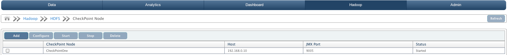
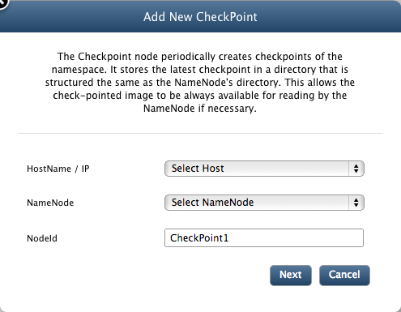

This chapter explains checkpoint node and how to configure a checkpoint node to create checkpoints of namespace periodically.
NameNode persists its namespace using two files: fsimage, which is the latest checkpoint of the namespace and edits, a journal (log) of changes to the namespace since the checkpoint. When a NameNode starts up, it merges the fsimage and edits journal to provide an up-to-date view of the file system meta-data. The NameNode then overwrites fsimage with the new HDFS state and begins a new edits journal.
The Checkpoint node periodically creates checkpoints of the namespace. It downloads fsimage and edits from the active NameNode, merges them locally, and uploads the new image back to the active NameNode. The Checkpoint node usually runs on a different machine than the NameNode since its memory requirements are on the same order as the NameNode.
The Checkpoint node stores the latest checkpoint in a directory that is structured the same as the NameNode's directory. This allows the check-pointed image to be always available for reading by the NameNode if necessary.
Multiple CheckPoint nodes may be configured on the cluster.
To configure CheckPoint nodes or perform start/stop operations on them, navigate to CheckPoint Node tab.
To add checkpoint nodes to your cluster, follow the guidelines mentioned below
To add a CheckPoint node, click on Add button. You will see the following dialog box.
Select host-name for the host on which you want to install the CheckPoint node. It is recommended that you install your CheckPoint node on a different machine than the NameNode since its memory requirements are on the same order as the NameNode.
Select node id for the NameNode you want to associate your CheckPoint node with.
Enter unique identifier for your CheckPoint node.
Click Next.
Enter path for the directory where you want your CheckPoint node to store its data.
Enter port for the web services of CheckPoint node.
Enter JMX port for CheckPoint node. QueryIO monitors its nodes via JMX.
Click Save.
To configure existing CheckPoint nodes, follow the guidelines mentioned below
At this point, it is assumed that you have already added CheckPoint node to your cluster. The table in the CheckPoint node view lists all the CheckPoint nodes.
Select the check-box adjacent to the CheckPoint node that you want to configure and click on Configure. Here you can edit various node specific properties. Once you are done, click Save.
To start/stop existing CheckPoint nodes, follow the guidelines mentioned below
Select the check-box adjacent to the CheckPoint node that you want to start/stop and click on Start/Stop buttons respectively.
Same way you can delete your existing CheckPoint nodes.